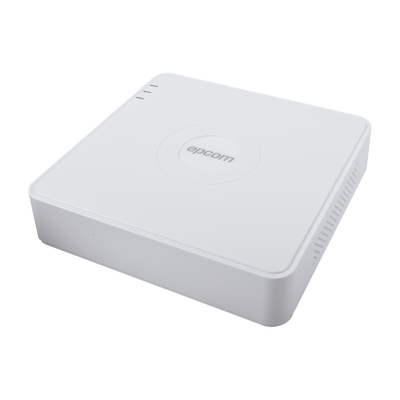

DVR 1080p Lite Pentahibrido / 4 Canales TURBOHD + 1 Canal IP / 1 Bahía de Disco Duro / H.264+ / 1 Canal de Audio / Salida Full HD

$ 872.00
Características Principales:
Tecnología TURBOHD Ver. 3.0
Número de canales: 4 canales analógicos o TURBOHD + 1 canal IP = 5 canales en total.
NOTA: Permite apagar canales análogos para agregar canales IP.
El canal IP no se visualiza en plataforma hik-connect.
Soporte de tecnologías: HD-TVI / Analógico / AHD / IP / CVI.
Acceso remoto: PC (Windows / Mac), Smart Phone (iPhone, iPad, Android).
Compatibilidad con navegador Chrome (IE tab), Safari, Internet Explorer.
Compatible con software cliente multi sitio de hasta 64 canales (iVMS-4200).
Compatible con la plataforma Hik-Connect P2P.